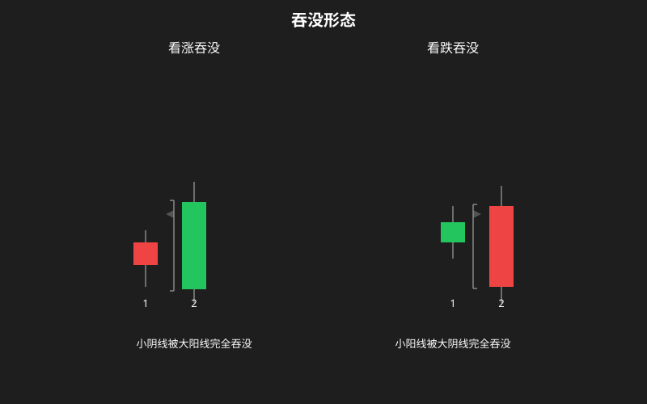
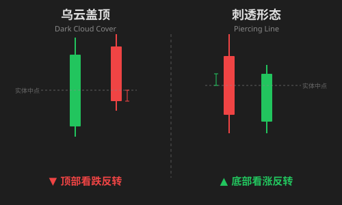
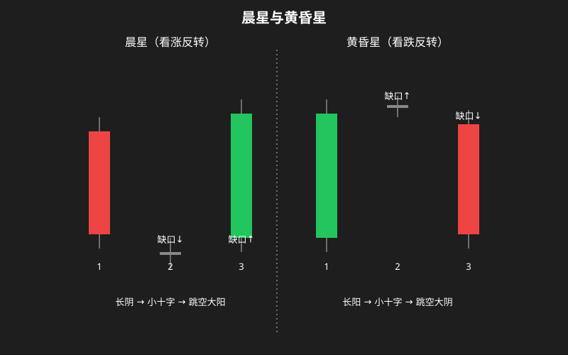
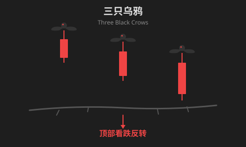
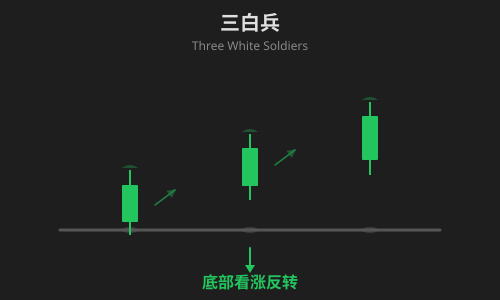
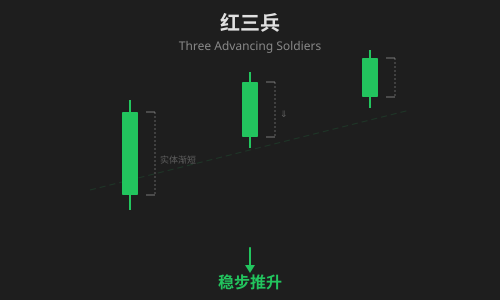
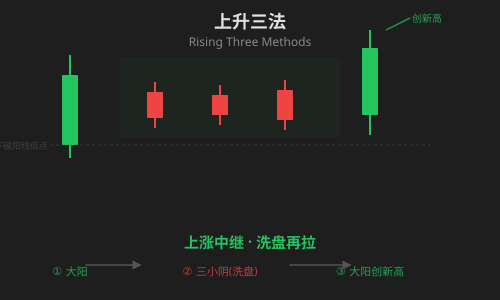
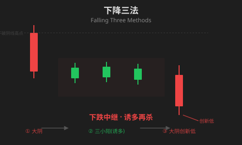

多根 K 线组合
单根 K 线是”单词”，多根 K 线组合才是”句子”。组合形态比单根形态可靠性更高，是技术分析的核心工具之一。
1. 吞没形态（Engulfing Pattern）
两根 K 线组成，第二根 K 线的实体完全”吞没”第一根 K 线的实体（影线不用管）。
看涨吞没（Bullish Engulfing）

| 项目 | 内容 |
|---|---|
| 形态特征 | 第一根是小阴线，第二根是大阳线，阳线实体完全覆盖阴线实体 |
| 出现位置 | 下跌趋势末端 |
| 代表意义 | 空头力量被多头彻底碾压，反转信号强烈 |
| 需确认 | 阳线成交量放大更可靠；下一根 K 线继续收阳则确认反转 |
看跌吞没（Bearish Engulfing）
| 项目 | 内容 |
|---|---|
| 形态特征 | 第一根是小阳线，第二根是大阴线，阴线实体完全覆盖阳线实体 |
| 出现位置 | 上涨趋势末端 |
| 代表意义 | 多头被空头反扑吞没，顶部反转信号 |
| 需确认 | 阴线放量更可靠；下一根 K 线继续收阴确认下跌 |
注意：两根 K 线影线可以忽略，只看实体是否完全覆盖。
2. 乌云盖顶 & 刺透形态
乌云盖顶（Dark Cloud Cover）— 顶部看跌

| 项目 | 内容 |
|---|---|
| 形态特征 | 一根大阳线后紧接一根大阴线，阴线开盘价高于阳线最高价，收盘价跌入阳线实体的 1/2 以下 |
| 出现位置 | 上涨趋势末端 |
| 代表意义 | 乌云压顶，空头强势反扑，把多头成果吞噬了一大半 |
| 需确认 | 阴线实体越长、扎入越深（超过 1/2），看跌信号越强；下一根收阴确认 |
刺透形态（Piercing Pattern）— 底部看涨
| 项目 | 内容 |
|---|---|
| 形态特征 | 一根大阴线后紧接一根大阳线，阳线开盘价低于阴线最低价，收盘价刺入阴线实体的 1/2 以上 |
| 出现位置 | 下跌趋势末端 |
| 代表意义 | 多头绝地反击，“刺穿”了空头的防线 |
| 需确认 | 阳线实体越长、刺入越深，看涨信号越强；配合放量效果更好 |
乌云盖顶 vs 看跌吞没：乌云盖顶要求阴线收盘跌入阳线实体内但未跌破开盘价；看跌吞没则是阴线完全覆盖了阳线，后者更强烈。
3. 晨星 & 黄昏星（启明星 & 黄昏之星）
三根 K 线组合，是最经典的反转形态之一。
晨星（Morning Star / 启明星）— 底部看涨

| 项目 | 内容 |
|---|---|
| 形态特征 | 大阴线 → 小实体（跳空低开）→ 大阳线（跳空高开并收复失地） |
| 出现位置 | 下跌趋势末端 |
| 代表意义 | ”黎明前的黑暗”：空头衰竭 → 犹豫 → 多头反攻，反转三部曲 |
| 需确认 | 中间的小实体若为 十字星 信号更强；第三根阳线放量确认 |
黄昏星（Evening Star / 黄昏之星）— 顶部看跌
| 项目 | 内容 |
|---|---|
| 形态特征 | 大阳线 → 小实体（跳空高开）→ 大阴线（跳空低开并跌破阳线实体） |
| 出现位置 | 上涨趋势末端 |
| 代表意义 | ”日落西山”：多头疯狂 → 犹豫 → 空头反扑，顶部反转 |
| 需确认 | 第三根阴线放量确认；如果中间是十字星，称为”黄昏十字星”，信号更强烈 |
4. 三只乌鸦 & 三白兵
三只乌鸦（Three Black Crows）— 顶部看跌

| 项目 | 内容 |
|---|---|
| 形态特征 | 连续三根实体较长的阴线，每根收盘价都比前一根更低，且每根开盘价都在前一根实体中部附近 |
| 出现位置 | 上涨趋势末端或高位 |
| 代表意义 | 空头连续三天压制，多头毫无还手之力，顶部确认 |
| 需确认 | 成交量逐步放大 → 恐慌性出货；成交量逐步缩小 → 只是技术回调 |
三白兵（Three White Soldiers）— 底部看涨

| 项目 | 内容 |
|---|---|
| 形态特征 | 连续三根实体较长的阳线，每根收盘价都比前一根更高 |
| 出现位置 | 下跌趋势末端或低位 |
| 代表意义 | 多头连续发力，趋势反转确立，像三列士兵列队前进 |
| 需确认 | 成交量温和放大 → 健康上涨；若第三根出现巨量长阳 → 可能短期高潮 |
5. 红三兵（Three Advancing White Soldiers）
红三兵是三白兵的细分变体，通常特指：三根阳线实体长度逐渐缩短或相近，且每根都有较短的上影线，走势稳健。

| 项目 | 内容 |
|---|---|
| 形态特征 | 三根阳线，实体可能逐渐缩短，上影线短，走势稳健扎实 |
| 出现位置 | 底部启动阶段或上涨中途 |
| 代表意义 | 稳步推升，控盘良好，不是急拉出货 |
| 与三白兵区别 | 红三兵更强调稳健；三白兵更强调强势（实体可以越来越大） |
6. 上升三法 & 下降三法（Rising/Falling Three Methods）
这是一种 中途持续形态，而不是反转形态——告诉我们趋势还会继续。
上升三法（Rising Three Methods）— 上涨中继

| 项目 | 内容 |
|---|---|
| 形态特征 | 大阳线 → 三根（或更多）小阴线回调（不破阳线低点）→ 另一根大阳线创新高 |
| 出现位置 | 上涨趋势中途 |
| 代表意义 | ”洗盘再拉”：中间几根小阴线是主力在清洗浮筹，之后继续上攻 |
| 需确认 | 中间阴线缩量（洗盘特征），最后阳线放量（再次启动） |
下降三法（Falling Three Methods）— 下跌中继

| 项目 | 内容 |
|---|---|
| 形态特征 | 大阴线 → 三根（或更多）小阳线反弹（不破阴线高点）→ 另一根大阴线创新低 |
| 出现位置 | 下跌趋势中途 |
| 代表意义 | ”诱多再杀”：中间几根小阳线诱使散户抄底，然后继续下跌 |
| 需确认 | 中间阳线缩量，最后阴线放量 |
核心区别：上升/下降三法中间的 K 线虽然方向相反，但始终被第一根和最后一根 K 线的范围包裹，整体仍在原趋势方向上。
组合形态速查表
| 形态 | 组成 | 趋势位置 | 信号方向 | 可靠性 |
|---|---|---|---|---|
| 看涨吞没 | 2 根（小阴+大阳） | 低位 | ✅ 看涨反转 | ★★★★ |
| 看跌吞没 | 2 根（小阳+大阴） | 高位 | ❌ 看跌反转 | ★★★★ |
| 乌云盖顶 | 2 根（阳+阴） | 高位 | ❌ 看跌反转 | ★★★ |
| 刺透形态 | 2 根（阴+阳） | 低位 | ✅ 看涨反转 | ★★★ |
| 晨星（启明星） | 3 根（阴+小+阳） | 低位 | ✅ 看涨反转 | ★★★★★ |
| 黄昏星 | 3 根（阳+小+阴） | 高位 | ❌ 看跌反转 | ★★★★★ |
| 三只乌鸦 | 3 根阴线 | 高位 | ❌ 看跌反转 | ★★★★ |
| 三白兵 / 红三兵 | 3 根阳线 | 低位 | ✅ 看涨反转 | ★★★★ |
| 上升三法 | 5 根（阳+阴+阳） | 上涨中途 | ✅ 趋势持续 | ★★★★ |
| 下降三法 | 5 根（阴+阳+阴） | 下跌中途 | ❌ 趋势持续 | ★★★★ |
📌 实战注意
- 趋势是第一位的：在明显的下跌趋势中，即使出现看涨吞没也未必反转；在大牛市中，黄昏星可能只是短暂回调
- 位置决定价值：同样的形态在低位和高位意义完全不同
- 成交量是验证器：没有成交量配合的形态，可靠性打对折
- 多周期共振：如果日 K 出现晨星，同时周 K 也出现支撑位信号，可信度大大提升
- 等待确认：形态出现后，至少等下一根 K 线确认方向再行动
一句话总结：K 线组合不是水晶球，而是概率工具。理解每个形态背后的多空博弈逻辑，远比死记硬背图形更重要。